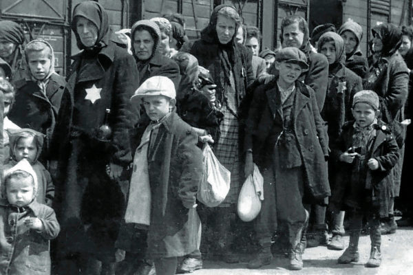

El Holocausto —también conocido en hebreo como השואה, Shoá, traducido como «La Catástrofe»—, conocido en la terminología nazi como «solución final» —en alemán, Endlösung— de la «cuestión judía», es el genocidio que tuvo lugar en Europa durante el transcurso de la Segunda Guerra Mundial bajo el régimen de la Alemania nazi. Los asesinatos tuvieron lugar a lo largo de todos los territorios ocupados por Alemania en Europa.
La decisión nazi de llevar a la práctica el genocidio fue tomada entre finales del verano y principios del otoño de 1941 y el programa genocida alcanzó su punto culminante en la primavera de 1942 —desde finales de 1942, las víctimas eran transportadas regularmente en trenes de carga, especialmente conducidos a campos de exterminio donde, si sobrevivían al viaje, la mayoría eran asesinados sistemáticamente en las cámaras de gas—. A cargo de su planificación, organización administrativa y supervisión estuvo Heinrich Himmler. Por lo demás, fue la repetida retórica antisemita de Adolf Hitler la que incentivó la ejecución de las matanzas, que además contaron directamente con su aprobación. De esta forma, entre 1941 y 1945, la población judía de Europa fue perseguida y asesinada sistemáticamente, en el mayor genocidio del siglo XX. Sin embargo, este exterminio no se limitó sólo a los judíos, sino que los actos de opresión y asesinato se extendieron a otros grupos étnicos y políticos. Cada brazo del aparato del Estado alemán participó en la logística del genocidio, convirtiendo al Tercer Reich en un «Estado genocida». Las víctimas no judías de los nazis incluyeron a millones de polacos, comunistas y otros sectores de la izquierda política, homosexuales, gitanos, discapacitados físicos y mentales y prisioneros de guerra soviéticos.
campos de concentracion

Dada la dificultad para establecer cifras certeras se ha tomado la cifra simbólica de seis millones de muertos en torno a la comunidad judía.1112 Se estima que en total, un mínimo de once millones de personas murieron, de ellas, un millón habrían sido niños y que de los judíos residentes en Europa antes del Holocausto, aproximadamente dos tercios fueron asesinados.13 La maquinaria del Holocausto tenía una red de aproximadamente 42 500 instalaciones por toda Europa para confinar y matar a sus víctimas y contó con la participación directa de entre 100 000 y 500 000 personas para su planificación y ejecución.14 Entre los métodos utilizados estuvieron la asfixia por gas venenoso, los disparos, el ahorcamiento, los trabajos forzados, el hambre, los experimentos pseudocientíficos, la tortura médica y los golpes.